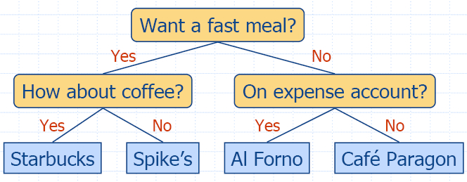

Chapter 6. Trees II
6.3 Binary Trees
A binary tree is an
ordered tree in which every node has at most two children. A binary tree
is proper if each
internal node has two children.
 |
- A binary tree is a tree with the following
properties:
- Each internal node has two children
- The children of a node are an ordered pair
- We call the children of an internal node left
child and right child
- Alternative recursive definition: a binary tree
is either
- a tree consisting of a single node, or
- a tree whose root has an ordered pair of
children, each of which is a binary tree
|
Examples: arithmetic expression, decision tree
Arithmetic Expression Tree

|
- Binary tree associated with an arithmetic
expression
- internal nodes: operators
- external nodes: operands
- Example: arithmetic expression tree for the
expression
(2 × (a −1) +
(3 × b))
|
Decision Tree
- Binary tree associated with a decision process
- internal nodes: questions with yes/no answer
- external nodes: decisions
- Example: dining decision

6.3.1 Binary Tree ADT
- The BinaryTree ADT extends the Tree ADT, i.e., it
inherits all the methods of the Tree ADT
- Additional methods:
- position leftChild(p)
- position rightChild(p)
- position sibling(p)
- Update methods may be defined by data structures
implementing the BinaryTree ADT
6.3.2 A Binary Tree
Interface
html-6.14a
(InspectableBinaryTree)
html-6.14b
(BinaryTree)
6.3.3 Properties of Binary
Trees
We denote the set of all nodes of a binary tree T, at the same depth d, as the level d of T.
Proposition 6.9: Let T be a proper binary tree
with n nodes and let h denote the height of T. Then T has the following
properties:
- The number of external nodes e in T
is: h + 1 ≤ e ≤ 2h
- The number of internal nodes i in T
is: h ≤ i ≤
2h − 1
- The total number of nodes n in T is: 2h + 1 ≤ n ≤
2h+1 − 1
- The height h of
T is: log(n + 1) − 1 ≤ h ≤ (n − 1)/2
Proposition 6.10: In a
proper binary tree T,
the number of external nodes e
is 1 more than the number of internal nodes i, i.e. e = i + 1.

 |
- Notation
n number of
nodes
e number of
external nodes
i number of
internal nodes
h height
- Properties:
- e = i +
1
- n = 2e − 1
- h ≤ i
- h ≤ (n − 1)/2
- e ≤ 2h
- h ≥
log2e
- h ≥ log2(n + 1)−1
|
Traversals of a Binary
Tree
Preorder
Traversal of a Binary Tree
void binaryPreorderPrint(const Tree& T, const Position& v)
{ cout << v.element(); // print element
if (isInternal(v)) // visit children
{ cout << " ";
binaryPreorderPrint(T, T.leftChild(v));
binaryPreorderPrint(T, T.rightChild(v));
}
}
Postorder Traversal of a
Binary Tree
void binaryPostorderPrint(const Tree& T, const Position& v)
{ if (isInternal(v)) // visit children
{ cout << " ";
binaryPostorderPrint(T, T.leftChild(v));
binaryPostorderPrint(T, T.rightChild(v));
}
cout << v.element(); // print element
}
Evaluating an Arithmetic
Expression

|
- Specialization of a postorder traversal
- recursive method returning the value of a
subtree
- when visiting an internal node, combine the
values of the subtrees
- O(n) time algorithm
|
Algorithm evalExpr(v)
if isExternal (v)
return
v.element ()
else
x
← evalExpr(leftChild (v))
y
← evalExpr(rightChild (v))
◊ ←
operator stored at
v
return x ◊ y |
Inorder Traversal of a
Binary Tree
|
- In an inorder traversal a node is visited after
its left subtree and before its right subtree
- Application: draw a binary tree
- x(v) = inorder rank of v
- y(v) = depth of v
- Visit "left to right"
|
Algorithm inOrder(v)
if isInternal (v)
inOrder(leftChild (v))
visit(v)
if isInternal (v)
inOrder(rightChild (v)) |
void binaryInorderPrint(const Tree& T, const Position& v)
{ if (isInternal(v)) // visit left child
binaryInorderPrint(T, T.leftChild(v));
cout << v.element(); // print element
if (isInternal(v)) // visit right child
binaryInorderPrint(T, T.rightChild(v));
}
Binary Search Trees
Binary search tree is a binary tree
so that each internal node v
stores an element e,
such that:
- the elements stored in the left subtree of v are less
than or equal to e,
and
- the elements stored in the right subtree of v are greater
than or equal to e.
Position searchBinaryTree(const Tree& T, const Position& v, const Object& e)
{ if (isInternal(v))
if (v.element() == e) return v; // found!
else if (v.element() < e)
searchBinaryTree(T, T.leftChild(v), e); // search left subtree
else searchBinaryTree(T, T.rightChild(v), e); // search right subtree
else return ... // not found!
}
The time for searching in a binary tree T is proportional to the
height of T, i.e. >= O(log n) and <= Omega(n)
A Unified Tree Traversal
Framework
The Euler Tour Traversal
of a Binary Tree

|
- Generic traversal of a binary tree
- Includes a special cases the preorder, postorder
and inorder traversals
- Walk around the tree and visit each node three
times:
- on the left (preorder)
- from below (inorder)
- on the right (postorder)
|
6.4 Data Structures for Representing Trees
6.4.1 A Vector-Based Structure for Binary Trees
6.4.2 A Linked Structure for Binary Trees
- A node is represented by an object storing
- element
- link to the parent node
- link to the left child node
- link to the right child node
- Node objects implement the Position ADT
Nodes and Positions in a
Binary Tree
html-6.27 (Node)
html-6.28
(Position)
Binary Tree Update Functions
html-6.29
(LinkedBinaryTree1)
html-6.30
(LinkedBinaryTree2)
LinkedBinaryTree.cpp
6.4.3 A Linked Structure
for General Trees
- A node is represented by an object storing
- element
- link to the parent node
- sequence of links to the children nodes
- Node objects implement the Position ADT
6.4.4 Representing General
Trees with Binary Trees
A representation of a general (ordered) tree T is obtained by
transforming T
into a binary tree T '.
The transformation is as follows:
- For each node u
of T, there is an
internal node u' of
T ' associated with
it.
- If u is an
external node of T
and does not have a sibling immediately following it, then the
children of u' are
external nodes.
- If u is an
internal node of T
and v is the first
child of u in T, then v' is the left child of u' in T '.
- If node v has a
sibling w
immediately following it, then w' is the right child of v' in T '.
Additional links:
http://www.cs.purdue.edu/homes/ayg/CS251/slides/chap5.pdf